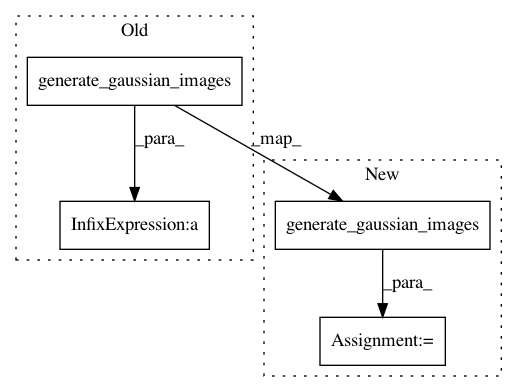

3d429176f6befedf7803a1f346770d264c8301a2,tests/nanshe/preprocessing/testOpNanshePreprocessData.py,TestOpNanshePreprocessData,testBasic1,#TestOpNanshePreprocessData#,46
Before Change
[70, 59, 65]])
masks = synthetic_data.synthetic_data.generate_hypersphere_masks(space, points, radii)
images = synthetic_data.synthetic_data.generate_gaussian_images(space, points, radii/3.0, magnitudes) * masks
image_stack = images.max(axis = 0)
image_stack = image_stack[..., None]
image_stack = vigra.taggedView(image_stack, "tyxc")
After Change
[70, 59, 65]])
masks = nanshe.synthetic_data.synthetic_data.generate_hypersphere_masks(space, points, radii)
images = nanshe.synthetic_data.synthetic_data.generate_gaussian_images(space, points, radii/3.0, magnitudes)
images *= masks
image_stack = images.max(axis = 0)
image_stack = image_stack[..., None]
image_stack = vigra.taggedView(image_stack, "tyxc")
In pattern: SUPERPATTERN
Frequency: 5
Non-data size: 4
Instances
Project Name: ilastik/ilastik
Commit Name: 3d429176f6befedf7803a1f346770d264c8301a2
Time: 2015-03-31
Author: kirkhamj@janelia.hhmi.org
File Name: tests/nanshe/preprocessing/testOpNanshePreprocessData.py
Class Name: TestOpNanshePreprocessData
Method Name: testBasic1
Project Name: ilastik/ilastik
Commit Name: 5ad03036bb03ac72ea333638503545df38dee242
Time: 2015-03-31
Author: kirkhamj@janelia.hhmi.org
File Name: tests/nanshe/preprocessing/testOpNanshePreprocessing.py
Class Name: TestOpNanshePreprocessing
Method Name: testBasic
Project Name: ilastik/ilastik
Commit Name: 84ede8392808c570a2a2fed0c710cac6ebafe261
Time: 2015-03-31
Author: kirkhamj@janelia.hhmi.org
File Name: tests/nanshe/postprocessing/testOpNanshePostprocessData.py
Class Name: TestOpNanshePostprocessData
Method Name: testBasic2
Project Name: ilastik/ilastik
Commit Name: 3d429176f6befedf7803a1f346770d264c8301a2
Time: 2015-03-31
Author: kirkhamj@janelia.hhmi.org
File Name: tests/nanshe/preprocessing/testOpNanshePreprocessData.py
Class Name: TestOpNanshePreprocessData
Method Name: testBasic2
Project Name: ilastik/ilastik
Commit Name: 84ede8392808c570a2a2fed0c710cac6ebafe261
Time: 2015-03-31
Author: kirkhamj@janelia.hhmi.org
File Name: tests/nanshe/postprocessing/testOpNanshePostprocessData.py
Class Name: TestOpNanshePostprocessData
Method Name: testBasic1